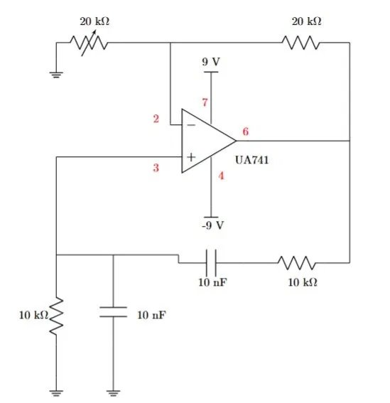
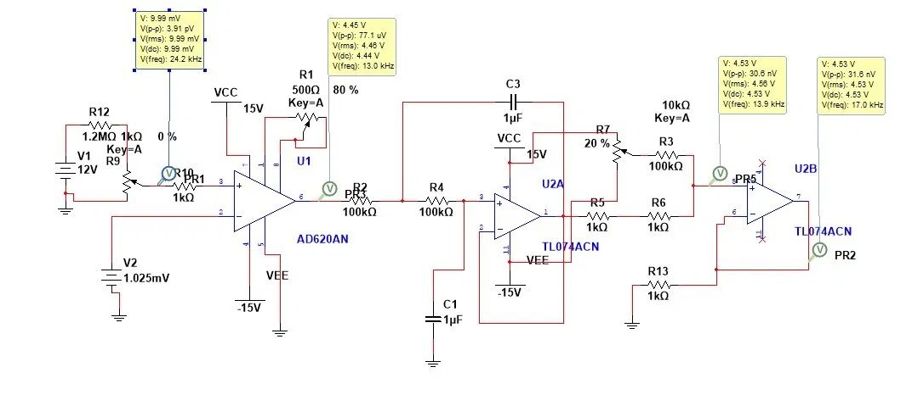
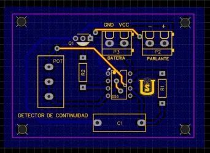
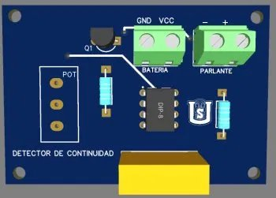

Electrónica Analógica III · 2026
Del Amplificador Operacional
al Prototipo Biomédico ECG
Autores del proyecto
Emerson Felipe Barrera Ramos 20241221637
Dominy Melandri Cadena Soto 20241221638
Daniel Stiven Olarte Fernández 20241221589
Jerónimo Pérez Pérez 20241221419
Docente
Ing. Julián Adolfo Ramírez Gutiérrez
Equipo

Emerson Felipe
Barrera Ramos
Barrera Ramos
20241221637

Dominy Melandri
Cadena Soto
Cadena Soto
20241221638

Daniel Stiven
Olarte Fernández
Olarte Fernández
20241221589

Jerónimo
Pérez Pérez
Pérez Pérez
20241221419
Recorrido del Curso
01
Op-Amps Avanzados
Fundamentos
→
02
Lean Startup
MVP Termopar
MVP Termopar
Metodología
→
03
PCB & Manufactura
Digital
Digital
Fabricación
→
04
Diseño Conceptual
Sintetizador ECG
Sintetizador ECG
Marco de diseño
→
05
Sintetizador ECG
Implementado
Implementado
Prototipo final
Una Historia de Evolución — 5 Proyectos
Guiada por la metodología Lean Startup · Del circuito básico al instrumento biomédico
01
Proyecto 1 · Fundamentos
Aplicaciones Avanzadas de
Amplificadores Operacionales
¿Puede un op-amp filtrar ruido, generar señales periódicas y amplificar con alta precisión diferencial? El laboratorio responde antes que la teoría.

Oscilador Wien — UA741 · f₀ = 1590 Hz
Cinco circuitos — Cinco herramientas
F/V
Conversor Frecuencia / Voltaje
IA
Amp. de Instrumentación TL084
SK
Filtro Sallen-Key Butterworth 2°
ST
Schmitt Trigger histéresis ±1.92 V
Wien
Oscilador Wien · error 0.10%
| Circuito | Resultado clave | Estado |
|---|---|---|
| Amp. de Instrumentación | CMRR = 40.26 dB · error < 4% | ✔ Validado |
| Filtro Sallen-Key | Caída −40 dB/dec confirmada | ✔ Validado |
| Oscilador Wien | f₀ = 1590 Hz · error 0.10% | ✔ Validado |
Transferencia directa: El amplificador de instrumentación y el filtro Sallen-Key del P1 se convirtieron en las etapas centrales del acondicionador de termopar. Los bloques son reutilizables por diseño.
🔧
Las herramientas están probadas. El P2 aplica estos bloques para resolver un problema industrial real.
→
02
Proyecto 2 · Lean Startup
Acondicionador de Termopar
para CESURCAFÉ
En la sala de tueste de CESURCAFÉ, el "primer crack" del café (≈ 204°C) se estimaba por sonido. Sin datos continuos de temperatura → sin control de calidad real → variabilidad entre lotes.

Simulación NI Multisim

Curva de Tueste · CESURCAFÉ
Cadena de acondicionamiento — 0 a 230 °C → 0 a 5 V
Sensor
Termopar K
~41 µV/°C
→
Etapa 1
AD620AN
G₁ ≈ 50.4×
→
Etapa 2
Sallen-Key
fc ≈ 1.59 Hz
→
Etapa 3
Amp. Salida
G₂ ≈ 9.82×
→
Salida
0 – 5 V
0 – 230 °C
Pivote basado en datos, no en suposición: Las pruebas mostraron que el operador necesita una alarma que active justo en el punto de primer crack. La decisión de diseñar un comparador de ventana surgió directamente de la validación experimental — esto es Lean Startup aplicado a ingeniería.
🏭
El MVP funciona pero el protoboard es frágil. Para entregarlo al laboratorio, necesita una base física profesional → P3
→
03
Proyecto 3 · Manufactura
Del Protoboard a la PCB
Industrial — EasyEDA → JLCPCB
Un protoboard funciona en el laboratorio, pero no en el mundo real: conexiones inestables, ruido por contacto deficiente, imposible de reproducir y entregar a un usuario externo.

Diseño 2D — EasyEDA

Render 3D — Previsualización
El salto de calidad: Protoboard vs PCB
🔌 Protoboard
✗ Conexiones que se aflojan con el tiempo
✗ Ruido por contacto intermitente
✗ Un solo ejemplar · no escalable
✗ Solo válido dentro del laboratorio
→
✅ PCB Industrial
✔ Pistas soldadas · conexión permanente
✔ Señal limpia y trazas definidas
✔ 5 unidades idénticas por $1.65 c/u
✔ Listo para uso real y entrega al cliente
Fabricar PCBs ya no es exclusivo de grandes empresas. El flujo EasyEDA → JLCPCB produce calidad industrial en 2 semanas por menos de $2 USD. Cualquier estudiante con conocimientos DFM puede hacerlo — y el equipo ya sabe cómo.
💓
El equipo domina diseño, simulación y manufactura. Hora de un instrumento biomédico real → P4
→
04
Proyecto 4 · Diseño ECG
Marco de Diseño del
Sintetizador Analógico ECG
¿Cómo representar la complejidad eléctrica del corazón humano usando únicamente componentes analógicos discretos, sin microcontrolador ni procesamiento digital?
El modelo: el latido es una superposición
Arquitectura de 5 módulos independientes
M1
Oscilador Maestro
NE555
→
M2
Gen. Ondas P & T
RC + Integ.
→
M3
Complejo QRS
TL074ACN
→
M4
Sumador Analógico
TL074ACN
→
M5
Salida & Seg. ST
TL071
🔬
El modelo arquitectónico está completo. En el P5 construimos, ajustamos módulo a módulo y validamos el prototipo con 3 anomalías clínicas.
→
05
Proyecto 5 · Prototipo Final
Sintetizador Analógico ECG — Implementación, Validación y Anomalías Cardíacas
De la arquitectura al protoboard
El P5 materializa el modelo del P4 en protoboard. Estrategia de integración incremental por módulos: cada etapa fue construida, ajustada y verificada de forma independiente antes de conectarla al sistema. Esto simplificó el diagnóstico de errores y aseguró que cada bloque cumpliera su función antes de la integración final.
Validación experimental vs estándar AHA
| Parámetro temporal | Rango clínico (AHA) | Valor medido |
|---|---|---|
| Intervalo PR | 120 – 200 ms | 160 ms ✔ |
| Duración QRS | 60 – 100 ms | 80 ms ✔ |
| Intervalo QT | 350 – 450 ms | 380 ms ✔ |
Validación de anomalías
| Anomalía | Parámetro modificado | Medido | Estado |
|---|---|---|---|
| Hipertrofia Ventricular | Amplitud onda R | 1.65 mV | ✔ |
| Inversión de Onda T | Polaridad T | −0.18 mV | ✔ |
| Fibrilación Auricular | Varianza RR | ±14.3% | ✔ |
Las 3 anomalías cardíacas — Comparación visual
Se seleccionaron 3 patologías de categorías ortogonales — amplitud, polaridad y periodicidad — para demostrar la capacidad clínica del sintetizador.
✔ Ritmo Normal
P·Q·R·S·T normales. FC = 75 lpm. Morfología clínica correcta.
① Hipertrofia Ventricular
Categoría: amplitud. Mayor masa ventricular → despolarización más intensa → onda R gigante. Ganancia M3 aumentada.
② Onda T Invertida
Categoría: polaridad. Isquemia subendocárdica → repolarización alterada → T negativa. Inversor unity-gain en M2.
③ Fibrilación Auricular
Categoría: periodicidad. Aurículas caóticas (350–600 Hz) → no hay onda P, solo ondas f. Intervalos RR irregulares ±14.3%.
La señal cardíaca, aparentemente compleja, se sintetiza íntegramente con electrónica analógica discreta estándar y sin microcontrolador. Amplificación, filtrado, integración y suma ponderada — todas las técnicas aprendidas durante el curso — convergen en un único instrumento biomédico funcional y validado.
Referencias
- Sedra, A. S., & Smith, K. C. (2020). Microelectronic Circuits (8th ed.). Oxford University Press. Cap. 8–11.
- Ries, E. (2011). The Lean Startup. Crown Business. Metodología Crear-Medir-Aprender aplicada a MVPs de ingeniería.
- Horowitz, P., & Hill, W. (2015). The Art of Electronics (3rd ed.). Cambridge University Press. Cap. 7.
- Tompkins, W. J. (1993). Biomedical Digital Signal Processing. Prentice Hall. Morfología de la señal ECG y criterios diagnósticos.
- Texas Instruments. (2020). TL07x Low-Noise JFET-Input Operational Amplifiers. Datasheet SLOS081K.
- Analog Devices. (2017). AD620 Low Cost, Low Power Instrumentation Amplifier. Datasheet AD620A/AD620B.
- American Heart Association. (2021). Recommendations for ECG Standardization. Circulation, 143(5), e154–e161.
- JLCPCB. (2024). PCB Manufacturing Capabilities & Design Rules. jlcpcb.com/capabilities.
Emerson F. Barrera
Portafolio
20241221637
20241221637
Dominy M. Cadena
Portafolio
20241221638
20241221638
Daniel S. Olarte
Portafolio
20241221589
20241221589
Jerónimo Pérez
Portafolio
20241221419
20241221419